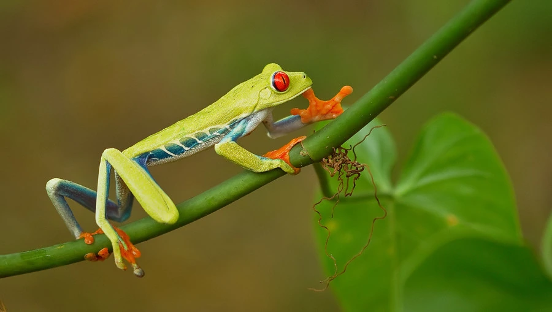

两栖动物 · 动物界
红眼树蛙 Agalychnis callidryas

中美洲雨林中的树蛙，通体翠绿、眼睛鲜红，受惊时会突然露出红眼与橙色脚趾，用突兀的色彩吓退天敌。
- 分类
- 门脊索动物门纲两栖纲目无尾目科雨蛙科属红眼树蛙属
- 栖息环境
- 中美洲热带雨林靠近溪流的树冠层与灌木
- 地理分布
- 墨西哥南部、危地马拉、洪都拉斯至巴拿马的热带雨林
- 保护级别
- IUCN 无危（LC）；非中国原产，在中国无保护级别
物种志
红眼树蛙体长 5–7.5 厘米，雌蛙大于雄蛙。它背部翠绿，腹部白色，身体两侧有蓝紫色与黄色条纹，脚趾呈橙红色并带有吸盘，最醒目的是那一对鲜红的大眼睛和竖直的瞳孔。平时它闭眼缩在叶背上，绿色身体几乎与叶片融为一体；一旦受惊，便猛地睁开眼睛、伸展橙红色四肢，用突兀的色彩把捕食者吓退。
它分布于墨西哥南部至巴拿马的热带雨林，栖息于靠近水体的树冠层，夜间捕食昆虫和蜘蛛。繁殖期雄蛙在树叶上鸣叫，雌蛙把卵产在悬于水面上方的叶片背面，卵孵化后蝌蚪直接落入水中，孵化期约 6–8 天，蝌蚪在水中生活约 2 个月后变态。栖息地砍伐与宠物贸易对其种群有一定影响，目前整体被评估为无危。
形态与习性
- 食性昆虫、蜘蛛及小型无脊椎动物
- 体长5–7.5 cm
- 寿命约 5–10 年
- 繁殖卵生，卵产于水面上方的叶片背面，孵化 6–8 天
- 活动节律夜行性
- 防御突然睁眼、展开橙红色四肢的“惊吓展示”
趣味知识
- 红眼树蛙睡觉时闭眼缩成一团，绿色体色让它几乎从叶背上消失。
- 它的卵产在悬于水面上方的叶片上，蝌蚪孵化后直接掉入水中。
- 鲜红的眼睛在受惊时突然出现，是典型的“惊吓色”防御策略。